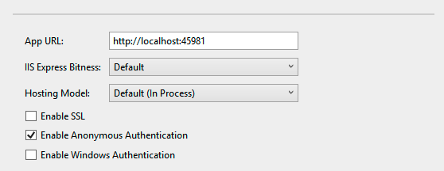
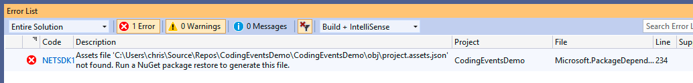

Visual Studio Operational Tips¶
For Windows users, opening and running some of the ASP.NET applications we provide in this book may require some extra steps. Here are some tips to help you troubleshoot. You may find some (or none!) of them relevant to you.
Whether you clone a project directly onto your computer and open it in Visual Studio, or choose to find a project to clone from the Visual Studio Team Explorer pane, always be sure to open the solution, the file with the
.slnending. If you’re not sure what item is opened in your Solution Explorer window, go to File > Start Window. From the Start Window, find the.slnfile for your project and open that directly (instead of any parent directory).
The project items available to be opened in Visual Studio.¶
BEFORE you attempt to run or debug your program, we recommend navigating to Debug > <ProjectName> Debug Properties. This will open a window where you can change some application settings. Scroll down to the bottom of the Debug view and under Web Server Settings, make sure the Enable SSL box is unchecked and Enable Anonymous Authentication is checked.
The preferred debug property settings for an ASP.NET application.¶
Ensuring you have opened the solution file for your project will help set you up for the opportunity to run the application using the IIS Express server. Visual Studio will probably show you that option to run IIS Express in your toolbar, where your green arrow to Run console applications had appeared. If you don’t see that button with the green arrow to run IIS Express, go to Debug > Start Debugging. This should start your ASP.NET application.
If, after trying to launch your program, you see a NuGet-type error, you may try going to Tools > NuGet Package Manager > Package Manager Console. From the console pane that opens up in your Visual Studio editor, type this command as you would in your own computer’s command line:
dotnet restore.Here’s the error we saw that this command fixed:
The error indicating “project.assests.json not found”.¶